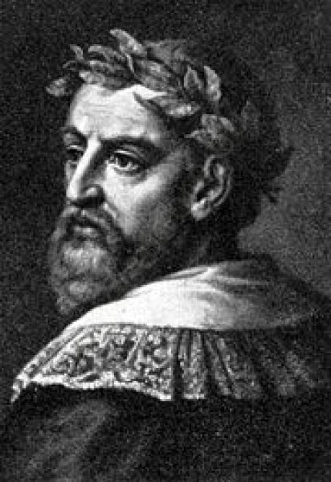

Ludovico Ariosto

Ludovico Ariosto (8 September 1474 – 6 July 1533) was an Italian poet. He is best known as the author of the romance epic Orlando Furioso (1516). The poem, a continuation of Matteo Maria Boiardo's Orlando Innamorato, describes the adventures of Charlemagne, Orlando, and the Franks as they battle against the Saracens with diversions into many sideplots. Ariosto composed the poem in the ottava rima rhyme scheme and introduced narrative commentary throughout the work.
Ariosto was born in Reggio Emilia, where his father Niccolò Ariosto was commander of the citadel. He was the oldest of 10 children and was seen as the successor to the patriarchal position of his family. From his earliest years, Ludovico was very interested in poetry, but he was obliged by his father to study law.
After five years of law, Ariosto was allowed to read classics under Gregorio da Spoleto. Ariosto's studies of Greek and Latin literature were cut short by Spoleto's move to France to tutor Francesco Sforza. Shortly after this, Ariosto's father died.